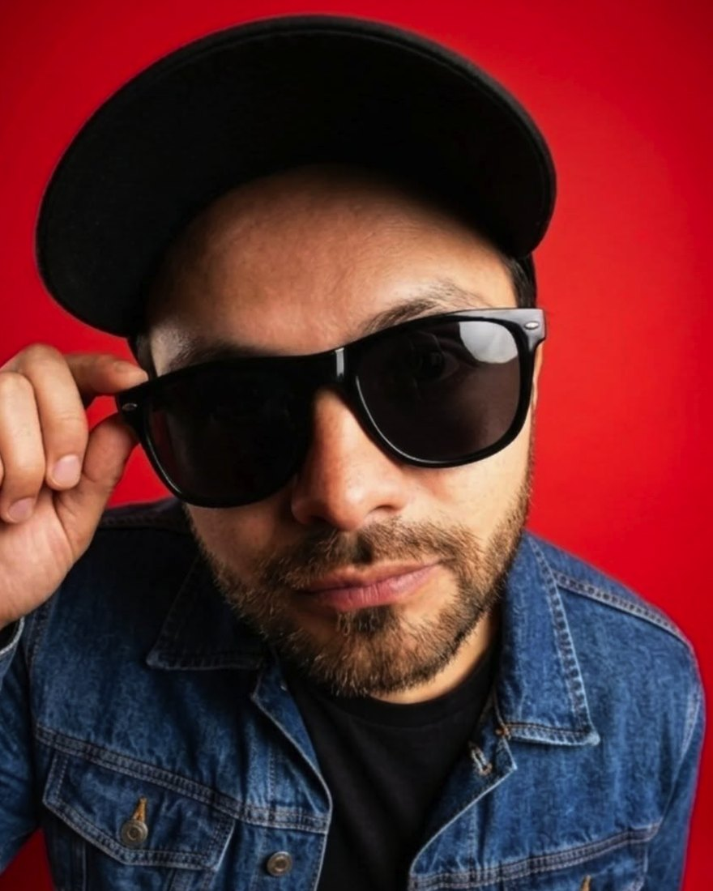

Bogotá, Colombia · Social Media Manager & Estratega de Contenido
Profesional en Publicidad y Mercadeo. Manejo la comunicación digital completa de una marca, desde la estrategia y la producción de contenido hasta la pauta, el copywriting y el análisis de métricas. Trabajo con visión 360°, así que lo que escribo para redes también llega al material POP, a las piezas de print y a las campañas de email masivo.

Lo que hago · Más de cinco años de experiencia